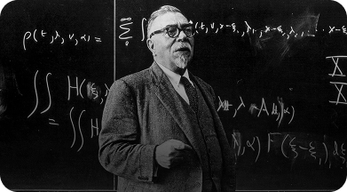
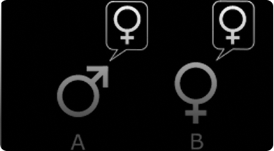
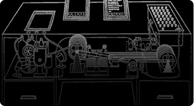

Alan Turing propôs um modelo teórico capaz de simular qualquer processo de cálculo: a
Máquina de Turing. Ela não era um computador físico, mas um conceito que
mostrou que problemas complexos.

A Arquitetura de Von Neumann definiu o modelo básico dos computadores modernos.

A Cibernética é a ciência que estuda os sistemas de controle e comunicação, tanto em máquinas quanto em seres vivos.

O Teste de Turing foi criado para avaliar se
uma máquina pode demonstrar inteligência
semelhante à humana.

Vannevar Bush idealizou o MEMEX, um
dispositivo que permitiria armazenar e
recuperar informações de forma associativa,
imitando o pensamento humano.